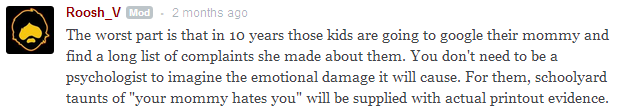
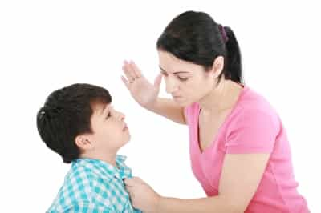

< < < Back
Mothers Have Become The Main Source Of Harm To Children – Return Of Kings
Back in 2013, Aurora Snow wrote a letter to her son. For those of you who don’t know who she is, Aurora Snow is a retired (aged out) hardcore porn actress with 384 films to her name. In fact, one of the first porno’s I ever owned starred Aurora Snow, though I didn’t know her name at the time. In Grade 7 a scummy little classmate of mine used to sell stolen DVD’s and video games out of his locker. And being a horny little ragamuffin, I bought one of the DVD’s; Gangbang Girl 27, starring Aurora Snow, Kami and seventeen well endowed gentlemen.
Regardless, I never knew the name’s of the two young women getting a hardcore train run on them until Aurora’s letter to her son went viral in 2013. Her letter itself is full of hollow rationalizations. For example, she claims to have done porn because;
Your mom grew up very, very poor. In early 2000, I was going to school at UC Irvine, and although I was a high school honor roll student, scored high on tests, and spent week after week filling out applications, I was still drowning in student loans.
Aurora obviously doesn’t know the meaning of very poor. She grew up in the prosperous town of Santa Maria, California. Money was obviously such a non-issue for her that she went to university instead of scrambling to get a job right out of high school. Poor for Aurora probably means that mommy and daddy didn’t get her a new car for her sweet sixteen, or that she didn’t have her own television in her bedroom.
She goes on about how the money in the industry was awesome, and the attention given to her made her feel good… essentially the only truthful parts of the letter. Then, at 28, with the wall flying fast at her preternaturally aged Porn & Party body, Aurora suddenly decided it was time to check FAMILY off on her list of Things I Totally Freakin’ Deserve.
I was a free spirit who could pick up and go at a moment’s notice, but those feelings faded when I realized what I was missing.
A free spirit who had to be a human dumpster for men in order to buy her next meal. What was beginning to go missing were her youth, looks, demand.
My priorities shifted. I was no longer the girl willing to do anything, instead I became a woman with a goal. I wanted a family, but first I had to find someone to create that family with. Not an easy task either. A dear friend of mine introduced me to a nice Midwestern farm boy who also happened to be in the entertainment field, creating TV shows. He was warm, charming, and very family-oriented.
I lost all enthusiasm for the more in-depth version of this article I was planning on writing when I read those words. Here is a porn star who freely admits she did everything and anything for money; being gang banged by every ethnic on the planet besides pygmy, receiving hard anal, having two penises in the vagina at the same time, literally guzzling semen… if you had the cash, Aurora would shamelessly do it. And what’s her punishment for a life of selfish whoredom? She gets to settle with a genuinely nice man, one who’s completely okay with the fact that his wife has had sex with at least 500 different men (though I would not rule out a number closer to four digits), and pops out a son. A literal son of a whore.
After living her 20’s like the selfish slut she and most of today’s women are, Aurora Snow got to start up a family at 32. She got to have her cake and is now eating it without a single, solitary worry. She’s bringing a child into the world who is screwed from the get go. Her letter was written for when her son gets a little older and can actually understand just what a disgusting human being his mother is, but he’ll know long before she pulls the letter out for him that he is the son of a literal whore. Kids at his school will be showing him pictures of his mommy getting pummelled by strange men. Her son’s childhood will consist of everyone laughing at him, snickering behind his back, questioning his parentage, asking if his mom can come perform at their parties. Images of his mother being gang banged will haunt his psyche forever.
Imagine if that was your mother in the above picture. What would a normal, mentally sound human being feel seeing such a nightmarish image?
Aurora’s son will be the one paying for her selfishness. I suspect her husband down the road will also pay his fair share for giving comfort to a horrendous human being like her, most likely in the form of cuckoldry or a divorce. Lord knows he likely has already contracted a few STD’s that came from her dream job. As for Ms. Snow… we all know it; she, herself, will never pay a price for her terrible choices in life. Women never do. Women can sleep with a hundred men, put themselves into tens of thousands of dollars of debt, can lie steal and cheat everyone they come across, spread disease far and wide, party away their 20s’s and even a chunk of their 30’s and in the end they’ll still meet a nice man willing to shower her with unchecked love and affection, not to mention oodles of cash and as many children as it takes to boost her ego. And it’s the children which face the shame and consequences of their mother’s actions.
A little while ago I wrote an article about a particularly repugnant woman named Rebecca Sparrow who chastised a couple of young mothers, even while she herself is a horrible human being who got to live the life of a party whore and then, at 35, got married to a doctor and started a family at the late age of 37. She writes at length about how horrible her children make her feel for daring to act like children. As Return Of King’s founder aptly puts it;

There’s this woman, who’s ultra libertarian political ideology caused literal physical harm to her children. She adopted two Haitian children, one boy and one girl, and moved them in with her one year old son. The Haitian boy began physically assaulted her real son. So she gave the Haitian boy back, like he was an unwanted toaster she got for Christmas and returned to Wal Mart for a refund. Her son, in his formative years, lived in a household where a person not of his skin colour physically assaulted him. Do you think he’s going to share his mom’s multicultural ideology? And will she face any sort of karmic justice because of the harm that resulted from her egotistical adoption?
Fellow ROK contributor Captain Capitalism gives us this example of a single mother whom claimed she couldn’t afford a present for her child. So he bought her daughter a present, and then eventually found out the mother splurged on a big screen television for herself.
Runsonmagic brings us Jenny Erikson, a mother who frivolously divorced her husband (who helped with housework, went to church, provided for and was active in their daughter’s lives) because of what basically amounts to: hey, why the hell not? Her daughters, who were very young at the time of the divorce, now live in a broken home. And is Jenny facing any harsh penalties for shattering their innocence and sense of family?
The examples of women causing their own flesh and blood children emotional and physical harm are numerous. And these mothers just don’t care. And they aren’t facing any consequences. A mother can literally kill her daughter and walk away scot free. The vast majority of divorces are initiated by women; to hell with their kids emotional health. The majority of criminals come from single mother homes. Children are far more likely to be sexually abused by the step fathers their mother’s shack up with than by any step mother their father’s become involved with. Postpartum depression is very common amongst new mothers and is often excused because she just can’t help it right? Isn’t it all those chemicals? Well…
Approximately 25% – 85% of postpartum women will experience the “blues” for a few days. Between 7% and 17% may experience clinical depression, with a higher risk among those women with a history of clinical depression. Rarely, in 1 in 1,000 cases, women experience a psychotic episode, again with a higher risk among those women with pre-existing mental illness. Despite the wide spread myth of hormonal involvement, repeated studies have not linked hormonal changes with postpartum psychological symptoms. Rather, these are symptoms of a pre-existing mental illness, exacerbated by fatigue, changes in schedule and other common parenting stressors.
So many, if not most, mother’s spend those first few days after the miracle of birth hating their child because its existence inconveniences hers. It’s an open secret that most women are mentally ill to some degree; millions of women in the United States alone are on some kind of anti-depressant or other personality controlling medication. It makes you wonder how many of today’s mothers, not so far down, ever stop hating their kids.
On the numerous mommy blogs populating the net, there’s a clear and pervasive undercurrent of hate and frustration with the children whom these blogs are supposedly centred around. Mothers write 2000 words about how frustrating they find whatever crime of the day their child did (that little weasel Timmy knocked over my latte and that snot nose Ynattirb drew all over my painting RUSRSLY?!!!): but then they temper it by adding, after all their anger and expletives “yet i love them lol”. Like that somehow makes insulting and belittling their children in front of the world okay. If men lived by mom logic, every time our kids caused us the slightest hint of anger we could walk up to them and sucker punch our children to the ground, hoofing them in the gut while they’re helpless and so long as we apologize afterwards everything’s hunky dory so suck it up champ.
Today, western society has put all the power of a child’s well-being and care into the hands of their mothers, with dad legally relegated to a kind of advisory role. And yet the vast majority of women in our current culture are incapable of being decent human beings in regards to themselves: their children stand no chance. Lately we’ve seen cracks and fissures erupting in the great Social Experiments, foremost amongst them feminism. While the thought that all these idiotic and harmful ideologies will fall within our life time is comforting, the fact remains that the damage to future generations has already been done.
It’s being done today, right now, to children all across the west. And the vast majority of those doing the damage…those who are laying the foundations for the failure and frustration of the next generation…are mothers. The women of today are the some of the biggest losers of women that have ever existed at any point in human history. They focus exclusively on themselves and what they want. Their own flesh and blood children are no exception to this selfish rule. And yet we continue to give them near total control of our children to these piss poor examples of motherhood. We’re not holding them accountable for the harm they’re doing to the most helpless of human beings.

If there is to be any hope for future generations, we need to acknowledge that by default women (especially today’s women) are not good mothers. They need to be controlled by and submit to men, and men need to be given the green light to enforce the superior will of man on their families. Misguided people rile about the Patriarchy, but under the patriarchy we created strong, moral societies whose humanism gave the world some of the greatest peace it’s ever known, and whose social achievements put us on the moon. Children were raised properly and brought up to be good people, and everyone benefited. Humanity prospered. Society was just, people were happy, and progress wasn’t an abstract dream but a wonderful reality.
After only a few decades of Mother’s rule our society stands on the brink of a deep darkness. The legacy of feminism and matriarchy is shaping up to be hollow celebrity worship, crony capitalism, mass drug induced escapism, mass poverty and a world where progress is now a hijacked euphemism standing for the tyranny of politically correct demagogues who want to take away the hard fought for rights of individual freedom.
Mother doesn’t know best. The great people’s of the past knew that, and the women of the modern west have proven it beyond any doubt. It’s just a damn shame so many children have to pay the price to prove it.
Read More: Don’t Work For A Female Boss


{kind=link}
{kind=link}